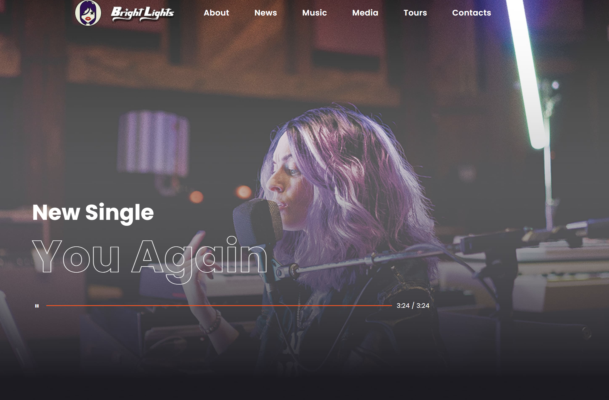
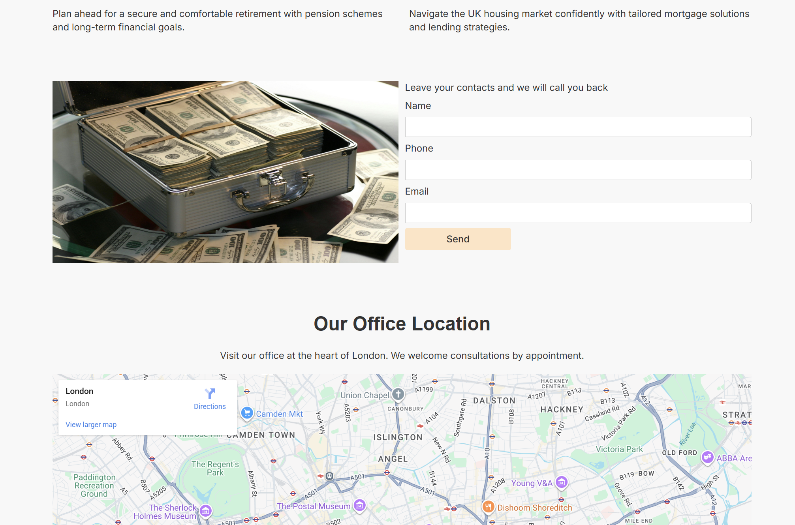
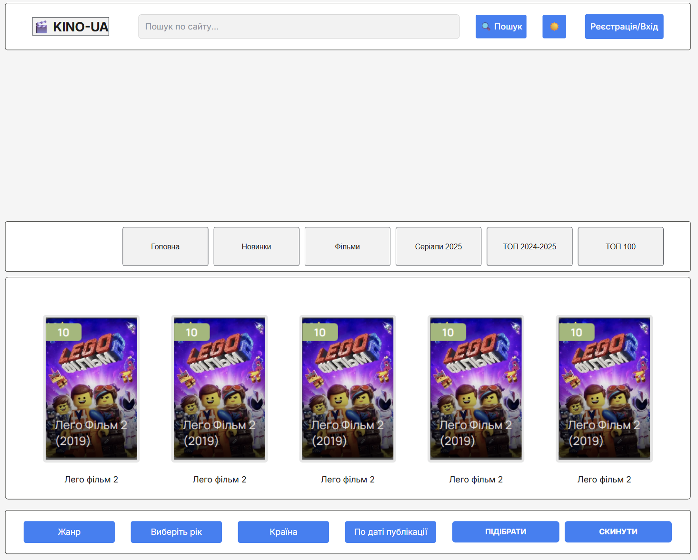
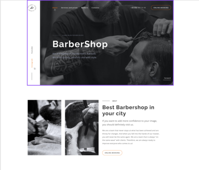
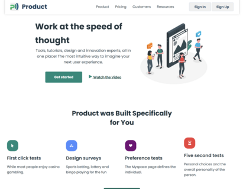
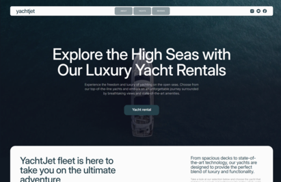
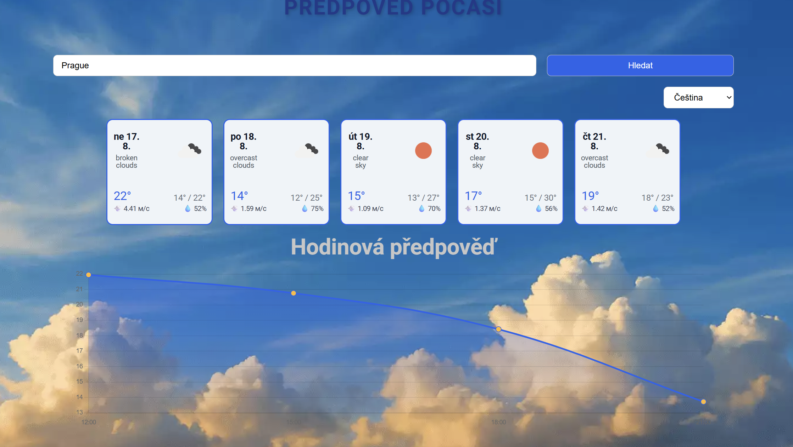
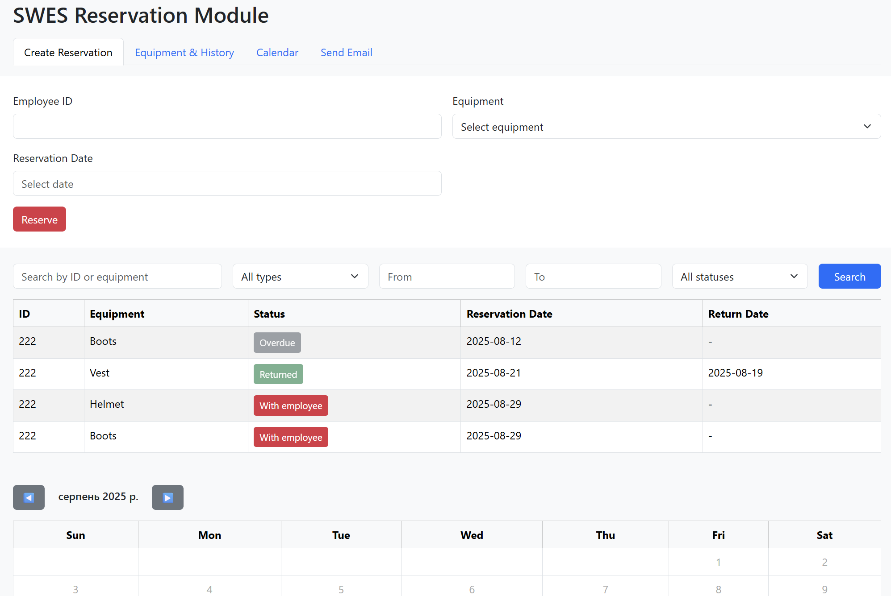

About Me
Я — фронтенд-розробник із Ліберця, Чехія. Маю технічну освіту у сфері комп’ютерних систем та спеціалізуюся на створенні сучасних вебінтерфейсів. Мої основні пріоритети — це якість коду, адаптивність і доступність для користувачів. Постійно працюю над вдосконаленням навичок і освоєнням нових інструментів.
У своїй роботі я поєдную прагматичний підхід і креативність, адже вважаю, що кожен інтерфейс має бути не лише функціональним, а й приємним у використанні. З особливим інтересом досліджую JavaScript та сучасні фреймворки, щоб створювати ефективні рішення для складних завдань. Створюю односторінкові сайти, покращую UI/UX, працюю з HTML, CSS, JS, інтегрую зовнішні API. Поза програмуванням надихаюся сім’єю та новими ідеями, які допомагають мені розвиватися як фахівцю й особистості.
Привіт! Я Віталій — Frontend розробник-початківець
Наразі я активно вивчаю JavaScript і проходжу курси на Fullstack розробника, щоб стати професіоналом у веб-розробці.
Маю міцні знання HTML та CSS, вмію створювати адаптивні і привабливі інтерфейси, що працюють на різних пристроях.
Працюю над проектами, щоб покращувати навички і освоювати нові технології крок за кроком.
Вірю, що постійне навчання і практика — це ключ до успіху у IT-сфері.
Я відкритий до нових викликів і готовий долучатися до цікавих проектів, де зможу застосувати свої знання і продовжувати рости.
Якщо шукаєш мотивованого і цілеспрямованого розробника, який швидко вчиться — зв'яжись зі мною!
Мої навички
Розвиваюся щодня, щоб бути в курсі сучасних технологій і трендів у веб-розробці. Вірю, що наполегливість і постійне навчання допоможуть мені досягти нових вершин у кар'єрі. Готовий братися за складні проєкти та швидко вивчати нові інструменти.
- HTML
- CSS
- Javascript
- Figma
- Vite
Мій досвід
Самостійне навчання та практичні проєкти
2024 — теперішній час
Активно вивчаю фронтенд-розробку, працюю над навчальними й особистими проєктами для закріплення знань на практиці. Опановую сучасні технології (HTML, CSS, JavaScript) та поступово розширюю компетенції у сфері веброзробки. Приклади моїх проектів можна побачити нижче.
Курси та онлайн-навчання
2024 — теперішній час
Самоосвіта
Проходжу навчальні програми та онлайн-курси, які допомагають розвивати практичні навички створення адаптивних і доступних інтерфейсів. Регулярно практикуюся у написанні коду, реалізовую власні мініпроєкти та вдосконалюю вміння працювати з сучасними інструментами веброзробки. У 2024 році розпочав курси Fullstack розробки у компанії GoIT і продовжую навчання до сьогодні.
Приклади робіт
Музичне портфоліо
Опис: Адаптивний односторінковий сайт для музичного виконавця, що презентує його нові сингли та майбутній альбом. Вебсайт включає інтегрований аудіоплеєр.

Технології:
- HTML - Використано тільки дескопт версія;
- CSS - Використано;
- JavaScript - частково;
- Посилання на репозиторій
- Вебсайт
Фінансовий консалтинг
Опис: односторінковий адаптивний сайт для британської компанії з фінансового консалтингу. Містить опис послуг, переваги компанії, форму зворотного зв’язку, блог, інтерактивну карту.

Технології:
- HTML - Використано + mobile-first;
- CSS - Використано;
- JavaScript - частково;
- Посилання на репозиторій
- Вебсайт
Кіно
Опис: односторінковий сайт, що надає користувачам можливість переглядати фільми та серіали українською мовою. Інтерфейс сайту простий і зручний, з адаптивним дизайном, що дозволяє комфортно переглядати контент на різних пристроях.

Технології:
- HTML - Використано + mobile-first;
- CSS - Використано;
- JavaScript - частково;
- Посилання на репозиторій
- Вебсайт
Барбершоп
Опис: односторінковий адаптивний сайт для чоловічої перукарні в Києві. Він поєднує стильний дизайн із зручним функціоналом для онлайн-запису та швидкого перегляду послуг.

Технології:
- HTML - Використано + mobile-first;
- CSS - Використано;
- JavaScript - частково;
- Посилання на репозиторій
- Вебсайт
Продукт для бізнесу
Опис: односторінковий сайт, який демонструє можливості платформи для тестування та валідації продуктів. Сайт орієнтований на стартапи та компанії, які прагнуть оптимізувати свої продукти через зворотний зв'язок від користувачів.

Технології:
- HTML - Використано + mobile-first;
- CSS - Використано;
- JavaScript - частково;
- Посилання на репозиторій
- Вебсайт
Вебстудія
Опис: односторінковий адаптивний сайт, створений у рамках домашнього завдання №6 курсу GoIT. Сайт демонструє можливості веб-студії, що спеціалізується на цифровому дизайні та маркетингових рішеннях.

Технології:
- HTML - Використано + mobile-first;
- CSS - Використано;
- JavaScript - частково;
- Посилання на репозиторій
- Вебсайт
Яхти
Опис: односторінковий сайт, розроблений у рамках командного проєкту, що демонструє можливості оренди розкішних яхт для подорожей. Сайт поєднує елегантний дизайн із зручним функціоналом для перегляду флоту та відгуків клієнтів.

Технології:
- HTML - Використано + mobile-first;
- CSS - Використано;
- JavaScript - частково;
- Посилання на репозиторій
- Вебсайт
Сайт погоди
Опис: Сайт погоди – веб-додаток для перегляду прогнозу погоди в обраних містах. Підтримує погодинний та денний прогноз, автодоповнення при введенні міста та кілька мов (чеська, українська, англійська).

Технології:
- HTML - Використано + mobile-first;
- CSS - Використано;
- JavaScript - можна ще щось додати за бажанням;
- Посилання на репозиторій
- Вебсайт
SWES Reservation Module
Опис: Інтерфейс для бронювання та управління обладнанням у компанії. Користувачі можуть створювати бронювання, переглядати історію, фільтрувати за типом та статусом, а також переглядати календар.

Технології:
- HTML - Використано;
- CSS - Bootstrap — популярний фреймворк;
- JavaScript - в цілому все що потрібно;
- Посилання на репозиторій
- Вебсайт